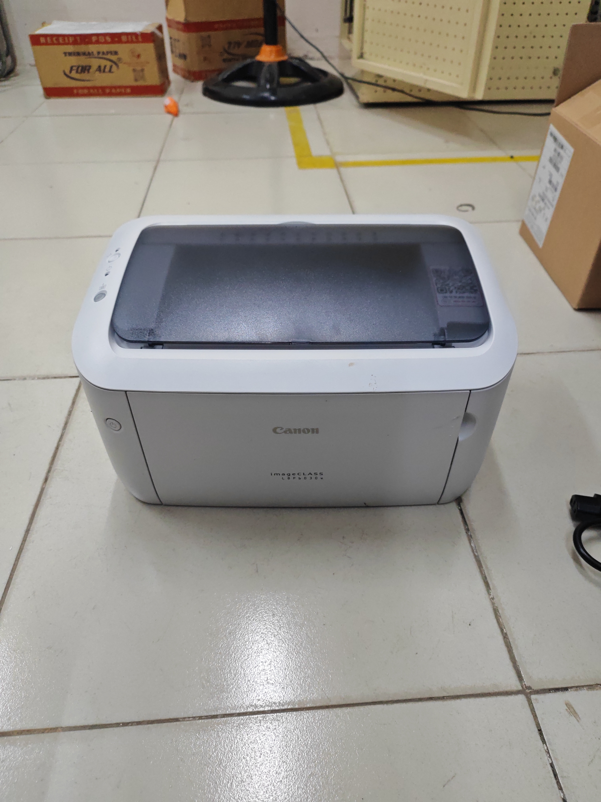
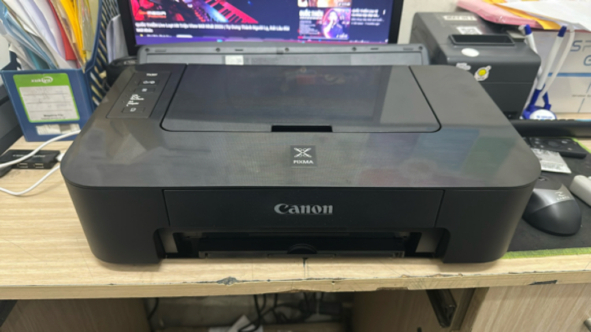

Latest news ·
6703OS-staging-1.0 is pending
The 6703OS-staging-1.0 release is pending. Printer compatibility testing covers two Canon printers.
Printers under test

Monochrome laser printer with Wi-Fi. Testing will check printer detection, connection, and sample document output.

Inkjet printer. Testing will check printer detection, connection, and sample document output.
Follow-up validation process
Further validation should record the test build, printer connection method, driver configuration, and date for each result.
- Prepare a 6703OS test system and record the printer connection method and driver configuration.
- Connect each printer and check whether 6703OS detects it and makes the appropriate driver available.
- Send text and image test pages, then check that the jobs complete and the printed output is legible.
- Repeat print jobs and connection checks after restarting the system; record errors and any required setup steps.
Reported printer test results
The notes report the results below, but do not identify the tested build or when the tests were performed. Treat these as unverified reports, not confirmed staging-1.0 results.
| Printer | Result |
|---|---|
| Canon TS207 | PASS |
| Canon LBP 6030W | FAILED — font issue |
Printer testing is still in progress on 6703OS-staging-1.1. The reported results above are not attributed to that build.